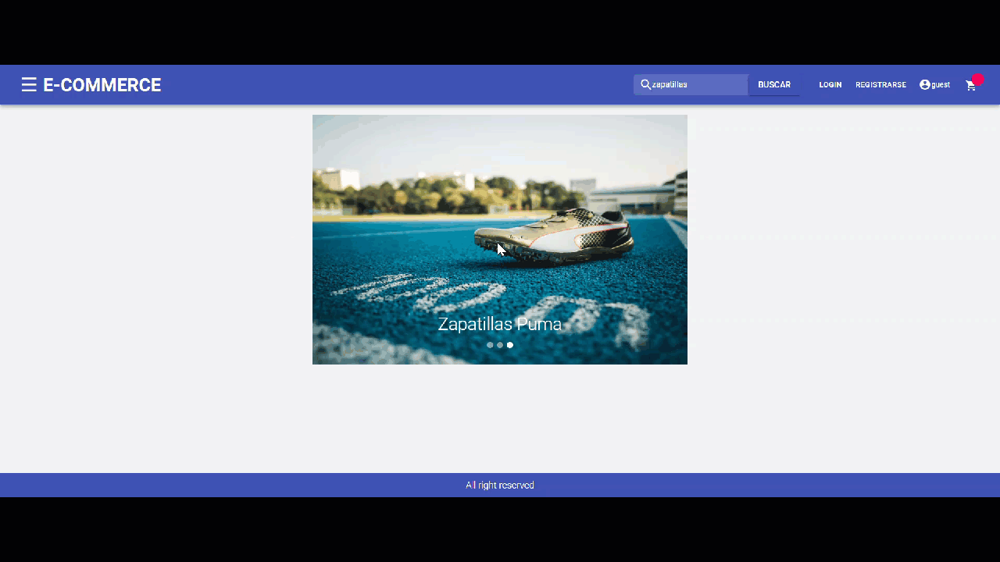
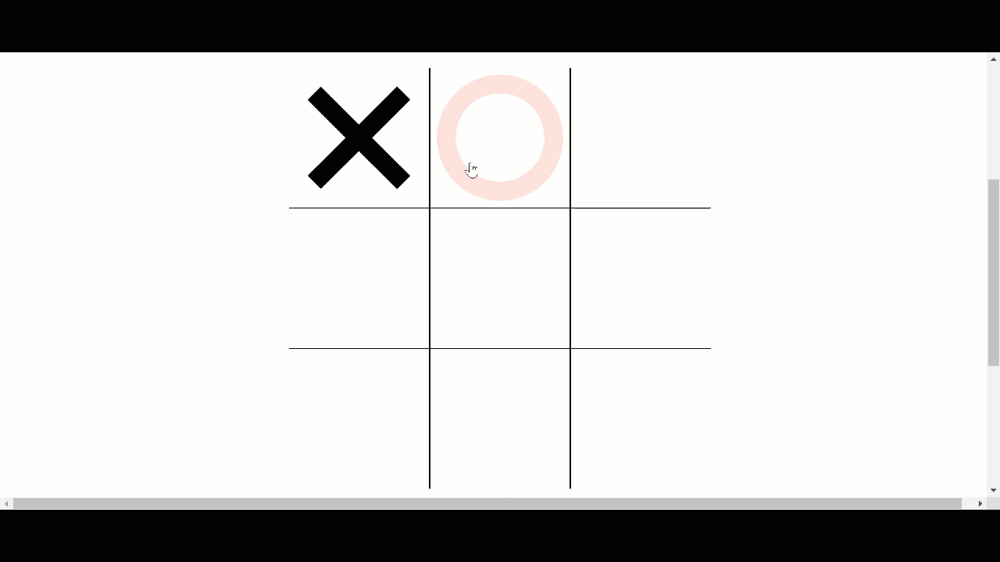

Here are some of the projects that I enjoyed the most. Some very complex, some simpler, some made in groups and others created individually.
Each and every one of these apps gave me new tools and taught me different skills.

This project is an E-commerce created in a group. It is a fairly complex app, where React, Redux, CSS, Material UI and Bootstrap were used in the Front-End. On the Back-End, Express, Morgan and Sequelize were used. In addition, it uses a database for its operation. In this project I was in charge of Front-End development.

The objective of this App was to build a Front-End and a Back-End that interact with an external API from Mercado Libre. From the API I pulled posts, which I then saved on the Back-End using a cache. For the Front-End, I developed a series of React Components to be able to show and interact with the aforementioned publications.

This app is a Google Maps Clone. It is a simple project in which almost 90% of the code is HTML and 10% is JavaScript.

This app is a Tic Tac Toe. It has a simple format, but the complexity is in the CSS code. It is built 45.6% in CSS, 37.3% in JavaScript and 17.1% HTML.